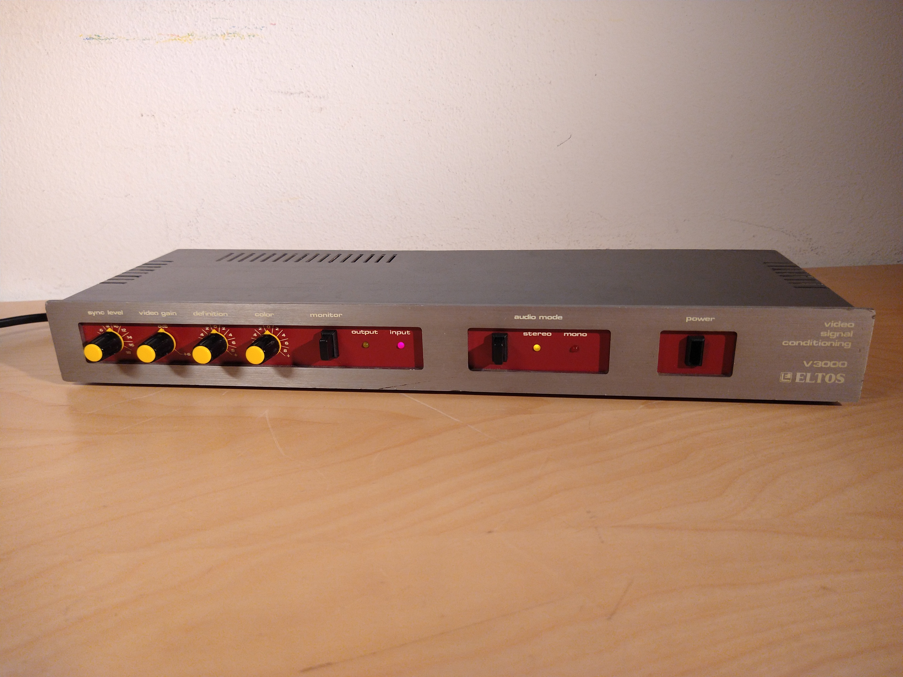
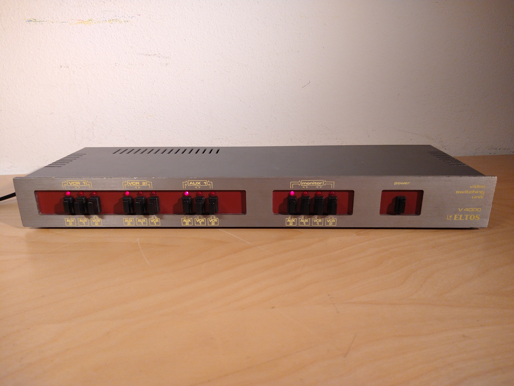
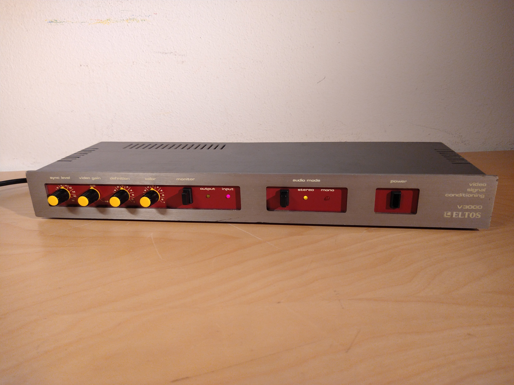
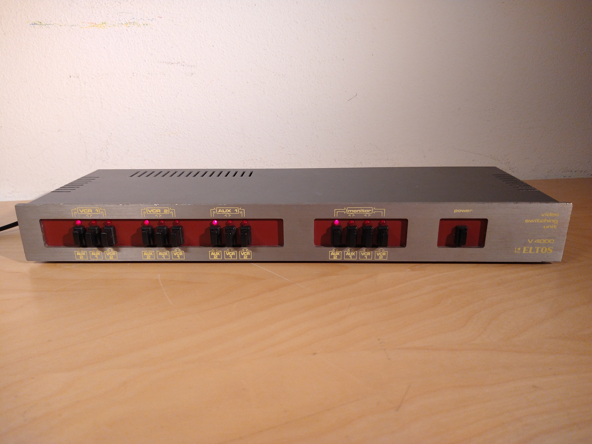

My retro video editing and processing setup
(This page is still being worked on. What you see here isn't the final product and will probably change quite a bit)
I've been slowly collecting various video editing devices, mostly from the 80s and 90s, which I currently have connected
to consumer-grade video sources and recorders.
This setup is still incomplete (for example, I'm lacking a real CRT monitor and a video mixer) and because of that
I'm still working on expanding my collection, however I though that it'd be a good idea to document the things I have
now on this page, since there generally isn't a lot of information about these things online.
Highlights
JVC JX-SV77 video processor

Featuring a built-in titler, colour correcting capabilities, the ability to wipe to and from a background colour and other features, the JVC JX-SV77 is a powerful analog video editing tool of the time.
Eltos V3000 and V4000
 



{kind=link}
{kind=link}
There's not a lot of info on these units: they were part of Eltos's line of video processing equipment, with my two units (and the others that I've seen in online listings) all sharing a common design theme, with an all-metal casing and an industrial-looking design.
The complete list
- Canon MV900 digital video camera
- JVC JX-SV77 video editing processor
- JVC TK-870E colour video camera
- Eltos V3000 "video signal conditioning"
- Eltos V4000 video switching unit
- Samsung DVD-R120E DVD recorder
- Sima ScreenWriter character generator
- Sony YR-3000 S-RGB transcoder
- Sony SLV-SX710 video cassette recorder
- Wharfedale Pro 502 USB audio mixer